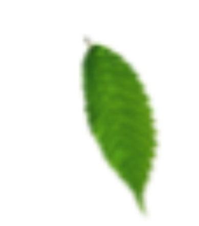

REDD+: Natural Climate Solution para dar suporte a estratégia corporativa de compensação de carbono de sua empresa.
SOBRE REDD+
COMO
FUNCIONA?
POR QUE
INVESTIR?
REDD+ significa Redução de Emissões provenientes de Desmatamento e Degradação Florestal (REDD) e
também inclui a conservação e aumento dos estoques de carbono florestal e o manejo sustentável
das florestas (REDD+). Em outras palavras, o mecanismo possui como base a diminuição do desmatamento, conservação da floresta em pé, uso apropriado da terra e florestas, além do aumento nos estoques de carbono.
Como sabemos, as florestas têm um papel essencial na regulação do clima, na conservação da biodiversidade e na proteção das bacias hidrográficas.
Com o mecanismo REDD+, proprietários são incentivados a manter suas florestas nativas em pé por meio da venda dos créditos de carbono gerados.
A concretização de um projeto de REDD+ começa com um estudo para avaliar o risco do desmatamento na região e o tamanho da área de floresta
que será conservada. Após o estudo, o projeto deve prever quais são as estratégias a serem adotadas para que a área seja efetivamente conservada: aumento de fiscalização, manejo sustentável, atividades com
benefícios sociais e ambientais para a região, alternativas de geração de renda para a população que antes precisava desmatar, recuperação de áreas degradadas, etc.
O projeto é então implementado e acompanhado com monitoramento e avaliações periódicas, capazes de medir a quantidade de CO2 evitada e também o sucesso das
ações implementadas. Cada tonelada de carbono evitada equivale a 1 crédito de carbono, que é verificado de acordo com padrões internacionais e disponibilizado em plataformas de registro.
A compra dos créditos gera conversão financeira para o projeto e consequências benéficas diretas para as comunidades ao entorno das florestas.
Já se foi o tempo em que o investimento em questões ambientais era apenas marketing para a empresa. Agora, a valorização financeira e
também o engajamento de funcionários e clientes finais depende de como a organização se posiciona e atua por um mundo mais sustentável.
Investir em REDD+ é uma solução inovadora e uma das estratégias mais indicadas para incluir e melhorar a performance da empresa em práticas ESG (Environmental, Social, Governance).
A empresa ainda passa a contribuir ativamente com os Objetivos do Desenvolvimento Sustentável da ONU, saiba como, clicando aqui.
Neutralize suas emissões, e além de contribuir para o combate às mudanças climáticas, apoie a conservação da Amazônia e diversos programas sociais, ambientais e econômicos nesse bioma.
teste
Benefícios adicionais gerados pelos nossos projetos
56.618.738
Toneladas de CO2e evitadas
194.112
Hectares de floresta protegidos
2.700
Nº de pessoas beneficiadas


CRÉDITOS DE
CARBONO PREMIUM
PROTEJA
FLORESTAS
E BENEFICIE
COMUNIDADES
LOCAIS.
Os projetos da Sustainable Carbon utilizam o SOCIALCARBON Standard, que é um padrão de qualidade que visa promover benefícios sociais, ambientais e econômicos a projetos de redução de carbono. Em cada monitoramento utilizando os Indicadores para projeto REDD na Amazônia do SOCIALCARBON, entidades certificadoras independentes verificam as melhorias ocorridas que deverão ser apontadas nos relatórios. Com isso garantimos, além das reduções de emissão, benefícios sociais para as comunidades e credibilidade para os nossos clientes, veja abaixo como nossos Projetos impactam os objetivos de desenvolvimento sustentável da ONU.